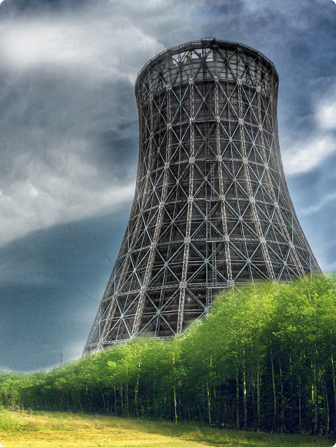

Проектирование, строительство, реконструкция и обслуживание градирен с пожизненной гарантией
- Специализированная строительная компания полного цикла, успешно работающая в области промышленного строительства на всей территории России и стран СНГ. Мы выполняем полный объем работ по проектированию, реконструкции, возведению градирен всех типов, обслуживанию и строительству комплексных систем оборотного водоснабжения для предприятий топливно-энергетической, металлургической, химической и нефтехимической отраслей промышленности.
- Высококвалифицированный персонал, многолетний практический опыт, впечатляющий портфель реализованных проектов, наличие собственных строительных бригад и их современное техническое оснащение, уникальные разработки, проверенные поставщики оборудования, производство по изготовлению технологического оборудования градирен и комплектующих – все это позволяет нашей компании предоставлять партнерам максимально эффективные, экономически выгодные решения, обеспечивать экспертный подход к реализации проектов любой сложности и гарантировать безукоризненное качество выполняемых работ.
- Наши Заказчики могут быть уверены в высоких эксплуатационных характеристиках градирен, построенные нашей компанией не испытывая проблем с обледенением и горением оборудования, за счет предусмотренных технологических решений и установки оборудования, собственной разработки еще на этапе проектирования градирни и грамотного обслуживания ВРС в зимний период
